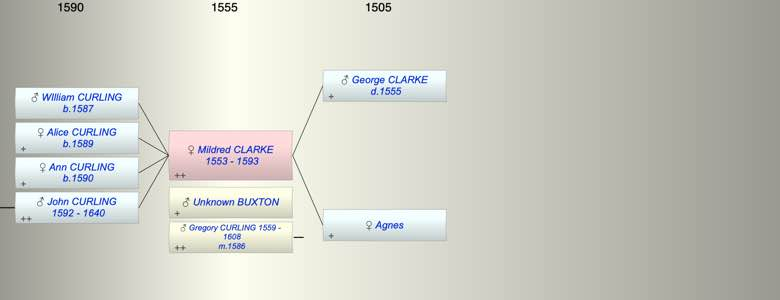

| [Index] |
| Mildred CLARKE (1553 - 1593) |
|  |
| b. 1553 at Offham, Kent |
| +. (1) Unknown BUXTON |
| m. (2) 16 Feb 1586 Gregory CURLING (1559 - 1608) at Wouldham nr Chatham |
| d. 1593 at St Laurence aged 40 |
| Parents: |
| George CLARKE ( - 1555) |
| Agnes |
| Siblings (5): |
| Jone CLARKE (1548 - ) |
| Jane CLARKE (1549 - ) |
| Elizabeth CLARKE (1550 - ) |
| Robert CLARKE (1551 - ) |
| George CLARKE (1552 - ) |
| Children (4): |
| WIlliam CURLING (1587 - ) |
| Alice CURLING (1589 - ) |
| Ann CURLING (1590 - ) |
| John CURLING (1592 - 1640) |
| Events in Mildred CLARKE (1553 - 1593)'s life | |||||
| Date | Age | Event | Place | Notes | Src |
| 1553 | Mildred CLARKE was born | Offham, Kent | bap 1 Oct 1553 Offham ex FS | ||
| 1555 | 2 | Death of father George CLARKE | |||
| 16 Feb 1586 | 33 | Married Gregory CURLING (aged 27) | Wouldham nr Chatham | Note 1 | |
| 1587 | 34 | Birth of son WIlliam CURLING | St Lawrence | bap 3 Mar 1587 St Lawrence | |
| 1589 | 36 | Birth of daughter Alice CURLING | Minster | bap MInster 4 May 1589 | |
| 1590 | 37 | Birth of daughter Ann CURLING | Minster | bap Minster 4 Oct 1590 | |
| 1592 | 39 | Birth of son John CURLING | Minster | bap MInster 15 Oct 1592 | |
| 1593 | 40 | Mildred CLARKE died | St Laurence | buried 5 Aug 1593 St Laurence | |
| Death of son WIlliam CURLING | Note 2 | ||||
| Created on a Mac™ using iFamily for Mac™ on 8 Oct 2023 |